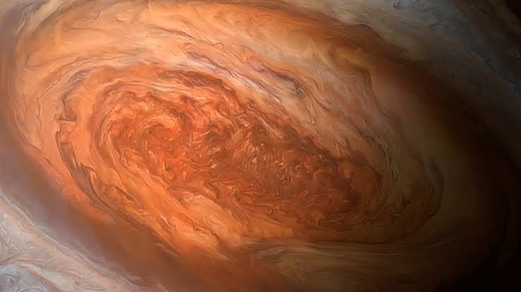
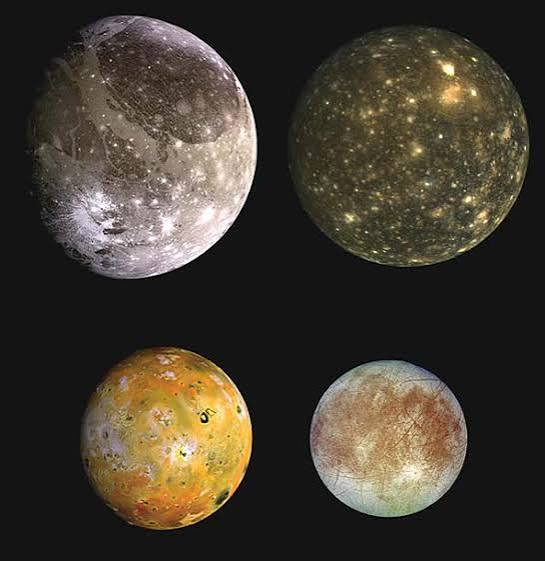

Jupiter is a world of extremes. It's the largest planet in our solar system – if it were a hollow shell, 1,000 Earths could fit inside. It's also the oldest planet, forming from the dust and gases left over from the Sun's formation 4.6 billion years ago. But it has the shortest day in the solar system, taking about 9.9 hours to spin around once on its axis. Jupiter's signature stripes and swirls are actually cold, windy clouds of ammonia and water, floating in an atmosphere of hydrogen and helium. The dark orange stripes are called belts, while the lighter bands are called zones, and they flow east and west in opposite directions. Jupiter’s iconic Great Red Spot is a giant storm bigger than Earth that has raged for hundreds of years.


With a radius of 43,440.7 miles (69,911 kilometers), Jupiter is 11 times wider than Earth. If Earth were the size of a grape, Jupiter would be about as big as a basketball. From an average distance of 484 million miles (778 million kilometers), Jupiter is 5.2 astronomical units away from the Sun. One astronomical unit (abbreviated as AU), is the distance from the Sun to Earth. From this distance, it takes sunlight 43 minutes to travel from the Sun to Jupiter.
Jupiter has the shortest day in the solar system. One day on Jupiter takes 9.9 hours (the time it takes for Jupiter to rotate or spin around once), and Jupiter makes a complete orbit around the Sun (a year in Jovian time) in about 12 Earth years (4,333 Earth days). Its equator is tilted with respect to its orbital path around the Sun by just 3 degrees. This means Jupiter spins nearly upright and does not have seasons as extreme as other planets do.
Jupiter took shape along with rest of the solar system about 4.6 billion years ago. Gravity pulled swirling gas and dust together to form this gas giant. Jupiter took most of the mass left over after the formation of the Sun, ending up with more than twice the combined material of the other bodies in the solar system. In fact, Jupiter has the same ingredients as a star, but it did not grow massive enough to ignite. About 4 billion years ago, Jupiter settled into its current position in the outer solar system, where it is the fifth planet from the Sun.
The composition of Jupiter is similar to that of the Sun – mostly hydrogen and helium. Deep in the atmosphere, pressure and temperature increase, compressing the hydrogen gas into a liquid. This gives Jupiter the largest ocean in the solar system – an ocean made of hydrogen instead of water. Scientists think that, at depths perhaps halfway to the planet's center, the pressure becomes so great that electrons are squeezed off the hydrogen atoms, making the liquid electrically conducting like metal. Jupiter's fast rotation is thought to drive electrical currents in this region, with the spinning of the liquid metallic hydrogen acting like a dynamo, generating the planet's powerful magnetic field. Deeper down, Jupiter's central core had long been a mystery. Scientists theorized Jupiter was a mostly homogeneous mix of hydrogen and helium gases, surrounding a small, solid core of heavier elements – ice, rock, and metal formed from debris and small objects swirling around that area of the embryonic solar system 4 billion years ago.
As a gas giant, Jupiter doesn’t have a true surface. The planet is mostly swirling gases and liquids. While a spacecraft would have nowhere to land on Jupiter, it wouldn’t be able to fly through unscathed either. The extreme pressures and temperatures deep inside the planet crush, melt, and vaporize spacecraft trying to fly into the planet.
Jupiter's appearance is a tapestry of colorful stripes and spots – the cloud bands that encircle the planet, and the cyclonic storms dotting it from pole to pole. The gas planet likely has three distinct cloud layers in its "skies" that, taken together, span about 44 miles (71 kilometers). The top cloud is probably made of ammonia ice, while the middle layer is likely made of ammonium hydrosulfide crystals. The innermost layer may be made of water ice and vapor. The vivid colors you see in thick bands across Jupiter may be plumes of sulfur and phosphorus-containing gases rising from the planet's warmer interior. Jupiter's fast rotation – spinning once every 10 hours – creates strong jet streams, separating its clouds into dark belts and bright zones across long stretches. With no solid surface to slow them down, Jupiter's spots can persist for many years. Stormy Jupiter is swept by over a dozen prevailing winds, some reaching up to 335 miles per hour (539 kilometers per hour) at the equator. The Great Red Spot, a swirling oval of clouds twice as wide as Earth, has been observed on the giant planet for more than 300 years. More recently, three smaller ovals merged to form the Little Red Spot, about half the size of its larger cousin.
The Jovian magnetosphere is the region of space influenced by Jupiter's powerful magnetic field. It balloons 600,000 to 2 million miles (1 to 3 million kilometers) toward the Sun (seven to 21 times the diameter of Jupiter itself) and tapers into a tadpole-shaped tail extending more than 600 million miles (1 billion kilometers) behind Jupiter, as far as Saturn's orbit. Jupiter's enormous magnetic field is 16 to 54 times as powerful as that of the Earth. It rotates with the planet and sweeps up particles that have an electric charge. Near the planet, the magnetic field traps swarms of charged particles and accelerates them to very high energies, creating intense radiation that bombards the innermost moons and can damage spacecraft. Jupiter's magnetic field also causes some of the solar system's most spectacular aurorae at the planet's poles.
Credit: https://science.nasa.gov/jupiter/jupiter-facts/